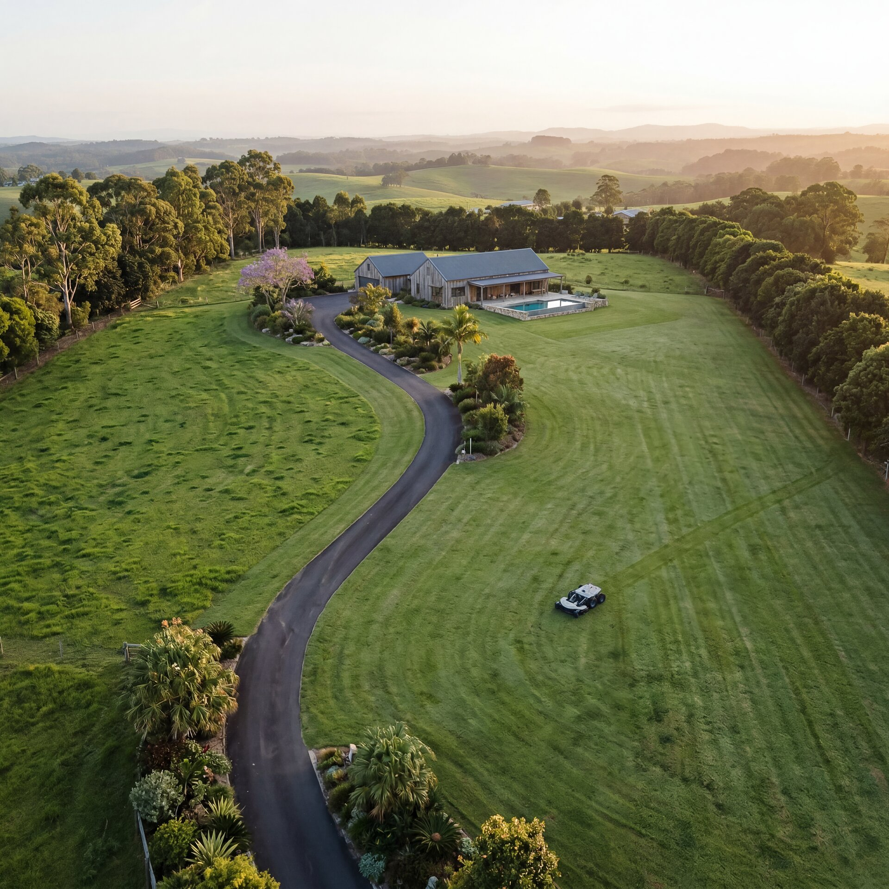
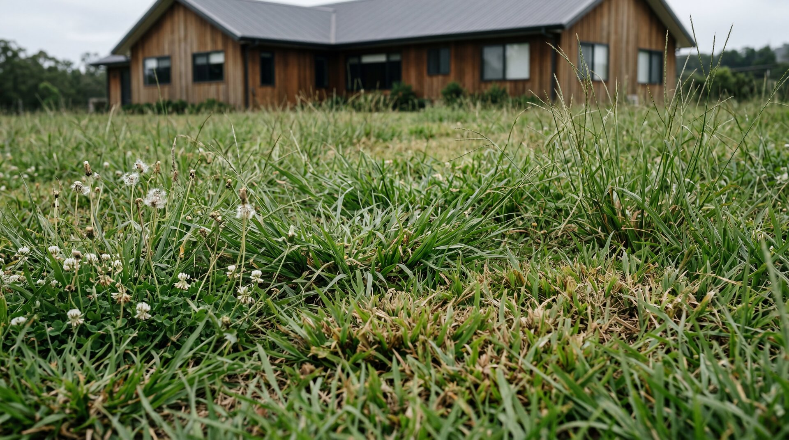
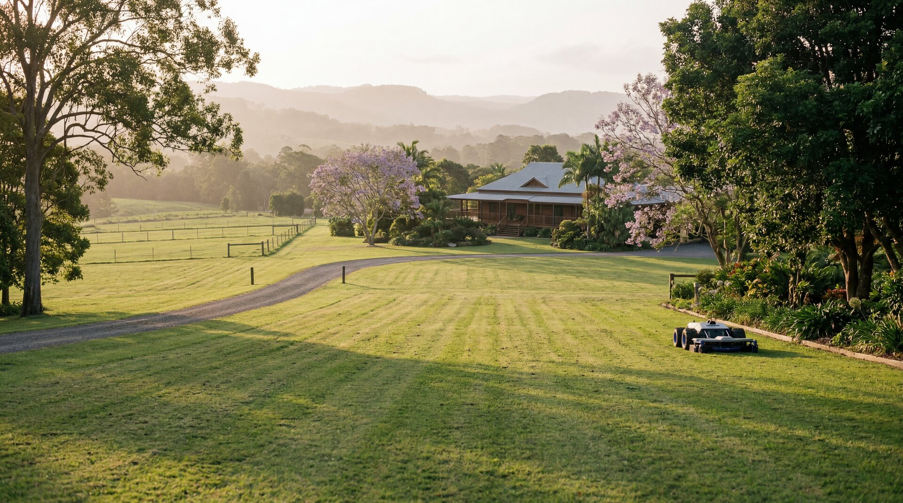
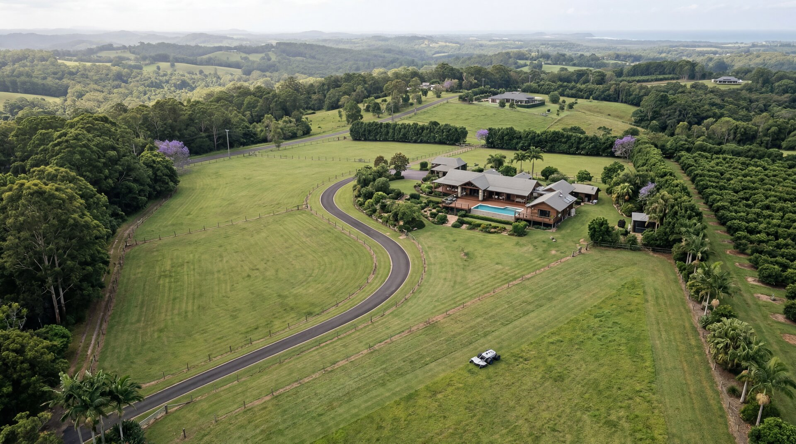
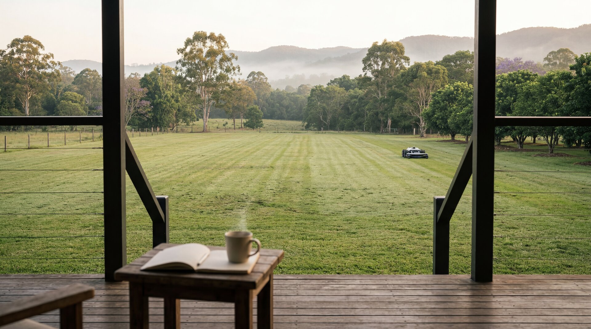

Should you switch from your contractor to autonomous mowing?
Run the numbers in 60 seconds. Independent multi-brand analysis for Northern Rivers acreage owners — see your 8-year cost comparison and the commercial-grade unit that fits your property.
AutoAcre is the Northern Rivers' independent multi-brand dealer for commercial-grade autonomous mowing equipment. Managed-service operations launch Q1 2027.
Fortnightly mowing doesn't keep up with acreage
You pay someone to come every two weeks with a ride-on. It looks great for three days. Then it doesn't. Guests arrive to long grass. You drive up on Friday night to a paddock, not a property.


How the Buy + Manage offer will work
AutoAcre is the Northern Rivers' independent multi-brand dealer. The launch offer pairs an outright mower purchase with a tiered monthly management fee, so the customer owns the asset and AutoAcre runs the service.
1. We assess your property
An on-site visit to map your acreage, identify mowing zones, and plan the optimal autonomous rotation for your terrain — including which commercial-grade unit best suits your property.
2. You buy the right autonomous mower for your block
Reference launch price $33,490 — final price varies by manufacturer selection. AutoAcre is multi-brand by design, so the recommended unit is matched to your property rather than to a single platform. Professionally installed with boundary mapping for your terrain. The mower is yours — you own the asset.
3. We manage it ongoing
Tiered monthly management fee from $165 (2.5 acres) to $650 (10 acres) will cover scheduled maintenance, blade replacements, firmware updates, monitoring and repair coordination. Mowing cadence is twice-weekly in summer and weekly in winter — about 3× a fortnightly contractor. Ad-hoc call-outs $150 per visit.
Grounds management for every scale
From lifestyle acreage to commercial estates, we deliver consistent, autonomous grounds care across the Northern Rivers.
Residential Buy + Manage (launching Q1 2027)
Buy the right commercial-grade autonomous mower for your block (reference price $33,490). Pay a tiered monthly management fee ($165–$650/mo for 2.5–10 acres) for ongoing maintenance, monitoring and repair coordination. The mower's yours, the service is ours.
Commercial Deployments
For councils, schools, resorts, golf courses, solar farms and large estates. AutoAcre will deploy commercial-grade autonomous mowing across multi-acre sites with managed operation. Talk to us early about your project — first deployments scheduled from Q1 2027.

Built for people who expect more from their property
"We spent years paying a bloke to come fortnightly and never being happy with how it looked between visits. With autonomous mowing the place looks like a resort week-in, week-out — completely different from the old fortnightly cycle."— Property owner, Ewingsdale
"We manage several holiday rental properties and the grounds were always a problem. Guests notice. Since switching to AutoAcre, the feedback has been consistently positive."— Property manager, Bangalow
"Owning the mower made the maths obvious. AutoAcre's management fee is half what we used to pay our contractor — and the lawn never has a bad day."— Absentee owner, Newrybar
AutoAcre by the numbers
Common questions
